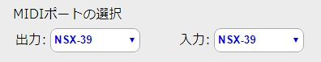

MIDIの使い方について
MIDIの使い方をGAKKEN HSX-39を使って書いておきたいと思います。HSX-39 はミクが歌うだけでなく、普通の音源として利用できます。またHSX-39ででなくても、お手持ちの最近のMIDI対応楽器であれば、どれでも同じように音が出ると思います。
- HSX-39とPCをUSBケーブルで接続します。
- HSX-39の電源を入れます。
- Google Chromeでこのページを開きなおします。リロードして下さい。
- 下の「MIDIポートの選択」の出力ポートにHSX-39と表示されているでしょうか？

このボタンを押してください。
ピアノの音が鳴ります。
ピアノの音が止まります。